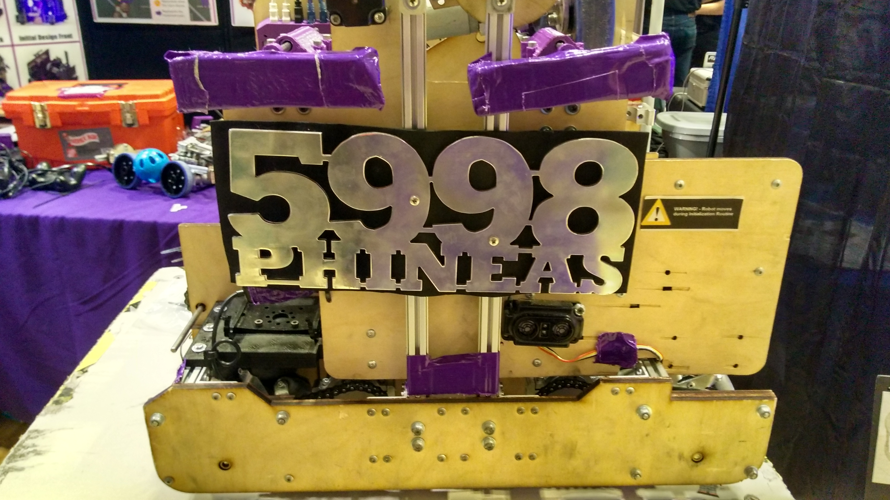

Phineas the Robot
Volunteer Work
Role: Coach
Emphasis: Leadership, MVP
Time: 7 Months
Overview
The non-profitt, F.I.R.S.T., holds a robotics competitions for middle school and high school students with a new challenge every year to help promote S.T.E.M. education. I worked with LASA Robotics as a Coach to help lead and mentor a team of students design and build a robot for that competition. My time on this project was spent teaching them about the design process, tthe concept of minimum viable product and the value of spending more time planning to reduce build time
Process
At the start of the build season, the team was given the challenge of building a robot that would score points while working with and against robots from other teams. There were a list of constraints on the size of the robot as well as the materials that could be used.
Example match Velocity Vortex
Our first deadline was about two months from the initial reveal of the challenge and about half of the team members were new. This required us to plan a little bit more than normal to reduce the amount of time building and increase the amount of time we get to iterate. As with any complex problem, our team’s first step was to break it down into smaller tasks and prioritize them. I showed the team that, given this was a challenge where different tasks already had point values and our goal was to score the most points, we could set up the tasks as an equation to see where most of the points would come from. We set a goal of 200 points every match. This gave us our game strategy which would drive our design.
Pros and Cons of one of the scoring tasks
After getting our priorities, it was time to ideate. The team came up with a couple of competing ideas but could not agree on one. I told them to create prototypes to see which ones would work the best.
All the different competeing designs on the white board
Some of their designs proved impossible, others were good ideas but they did not have the skills to construct them properly in the amount of time we had.
Testing a prototype
We landed on a final design with plenty of time to build and test.
3D CAD of the Final Design
With a design ready, we spent the rest of the two months building, testing and iterating. I had taught them the practice of delivering a minimum viable product, so that we can focus on incremental improvements and avoid total rebuilds (a misfortune I have experienced myself) and had them create test plans so that we could measure how close the iteration was to our goal.
The different iterations of the guide for the scoring mechanism
We were short of our goal when the first deadline came around, however that was fine as the rest of our competitors had not reached their own goals. For the remaining five months we worked on improving the design to achieve our goal. We added a couple new features, testing it on a separate robot to ensure we don’t add a broken feature to the working robot.
Phineas the Competition Robot (left) next to Pherb the Testing Robot (right)
Outcome
The team was able to make it to Super Regionals, the competition before the World Championship, before being knocked out. We were able to meet our design goal before making it to Super Regionals. More importantly, there is start to a new generation of design oriented engineers.
Phineas in a match
Retrospective
The team did an excellent job with the skills that they had. The team picked the design that matched their skills and it carried them far. They had come up with some designs that could have gotten them further, so it was unfortunate that we didn’t try their more ambitious ideas. I think a little bit more encouragement could have helped move them in the right direction, especially since we set aside extra time for designing.